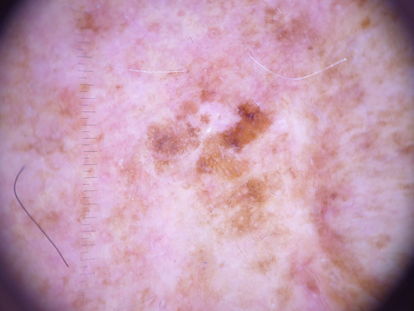
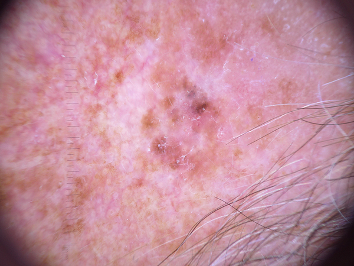
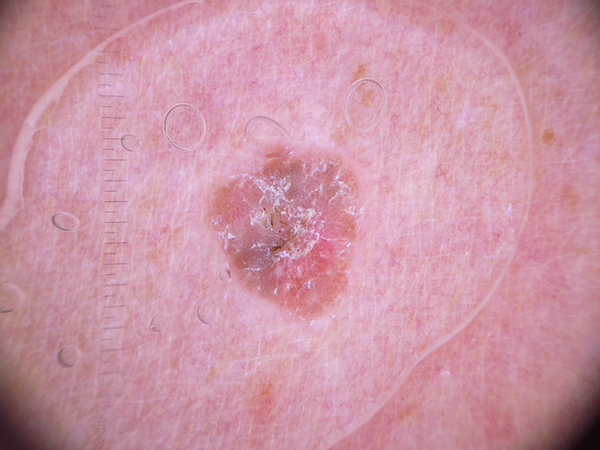
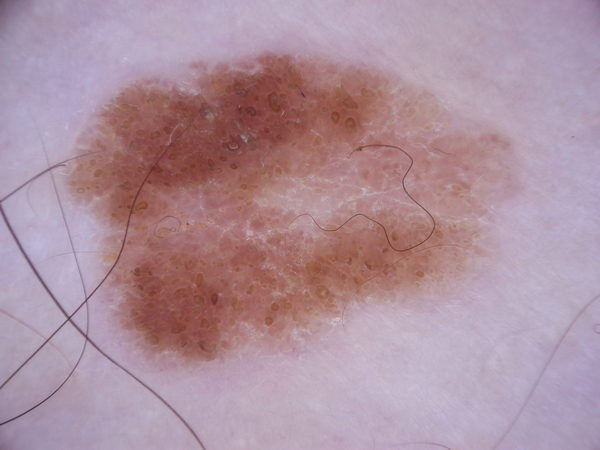

-
What is this lesion?
"Benign keratosis" is a generic class that includes seborrheic keratoses ("senile wart"), solar lentigo ( a flat variant of seborrheic keratosis), - and lichen-planus like keratoses (a seborrheic keratosis or a solar lentigo with inflammation and regression). Lichen planus-like keratoses are especially challenging because they can show morphologic features mimicking melanoma and are often biopsied or excised for diagnostic reasons.
-
What does it look like?
The three subgroups may look different dermatoscopically, but they are similar biologically and often reported under the same generic term histopathologically. The dermatoscopic appearance of seborrheic keratoses varies according to anatomic site and type.
-
Should I see a doctor?
DEPENDS. These lesions are common noncancerous skin growth. If you have any concerns or other symptoms (e.g. multiple growths in a short period of time, bleeding) please consult a doctor.
-
What the doctor would do about it?
Benign keratosis can usually be diagnosed by just looking at it. Treatment isn’t usually needed but some options for removal of a seborrheic keratosis include freezing with liquid nitrogen, electrocautery, ablation and curettage.



